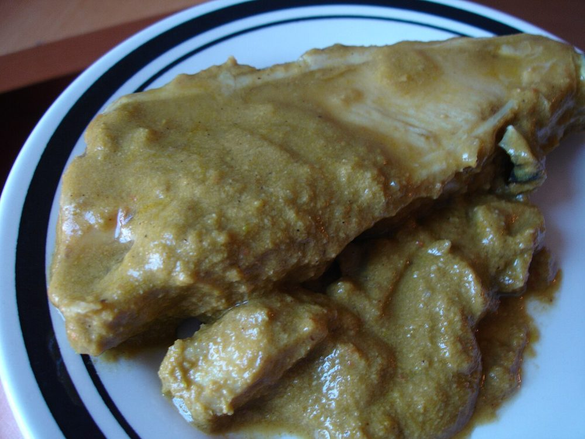

Prep20 min
Cook35 min
Total55 min
Serves4
Difficultymoderate
Contains: fish
Ingredients
Quantities for 4.
- 600g firm river fish, cut into 3cm steaks Fishrohu or trout, bone in. The bone holds the piece together
- 400g, peeled and cut into thick batons Radishmuj, the long white winter radish
- 6 tbsp Mustard Oil
- 2 tbsp Kashmiri Chilli
- 1 tsp Turmeric
- 2 tbsp Fennel Powder
- 1 tbsp Dry Ginger Powder
- 1/4 tsp Asafoetidause compounded-free hing to keep the dish gluten-free
- 1 tbsp dried pomegranate seeds, crushed Anardanathe traditional souring; 1 tbsp tamarind pulp is a fair stand-inoptional
- 600ml Water
- to taste Salt
Cookware
stovetop
Before you start
- Rub the fish steaks with 1 tsp salt and 1/2 tsp of the turmeric and leave them 15 minutes, then pat them thoroughly dry. Wet fish tears the moment it hits hot oil.
- Muji gaad is a winter dish and it is meant to be eaten the day the fish is cooked. Buy the fish the same morning if you can.
- Soak the Kashmiri chilli in 3 tbsp warm water for 10 minutes so it goes in as a paste.
Method
- Heat the mustard oil in a wide pan until it smokes, then lower the flame to medium.Fish will stick to anything less than properly hot oil in a properly hot pan.
- Fry the fish steaks in a single layer, 3 minutes a side, until crusted and deep gold. Lift them out and set aside.Leave them alone for the full 3 minutes; a piece that resists the spatula is not ready to turn.
- Add the radish batons to the same oil and fry 5 minutes, until the edges brown and the sharp raw smell fades.
- Add the hing and let it foam for 10 seconds.
- Off the heat, stir in the chilli paste, remaining turmeric, fennel powder and dry ginger.Kashmiri chilli scorches in a hot pan and takes the whole gravy brown with it.
- Pour in the water, add 1 tsp salt, and simmer covered 12 minutes until the radish is tender and the gravy has turned deep red.
- Return the fish, add the crushed anardana, and simmer uncovered 8 minutes, spooning gravy over rather than stirring.
- Rest 5 minutes off the heat and serve with plain rice.
Storage
Best eaten the day it is made. It keeps 24 hours refrigerated; reheat covered over low heat without stirring, so the fish stays in pieces.
Nutrition Good estimate
| Per serving288 g | Per 100 g | |
|---|---|---|
| Calories | 405 kcal | 141 kcal |
| Protein | 33.1 g | 12 g |
| Carbohydrate | 11.4 g | 4 g |
| of which sugars | 2.8 g | 1 g |
| Fibre | 6.3 g | 2 g |
| Fat | 25.8 g | 9 g |
| of which saturated | 3.2 g | 1 g |
| of which unsaturated | 20.0 g | 7 g |
Worked out from the listed quantities; most of the ingredient list could be weighed. Some ingredients have no exact match in the nutrient database and use the nearest equivalent: asafoetida. Estimated from raw ingredients using USDA FoodData Central. Cooking changes are not modelled, and added salt is excluded, so sodium is not given.
Recipe v1.0.0, last updated 2026-07-31. Curated for Khaana and kept under version control.